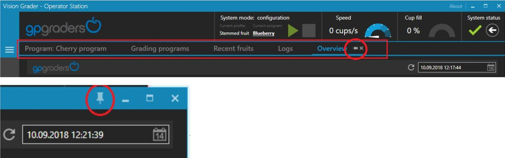
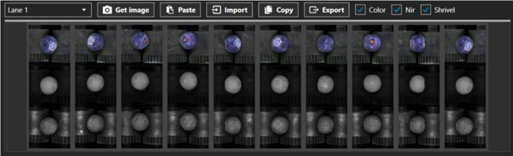
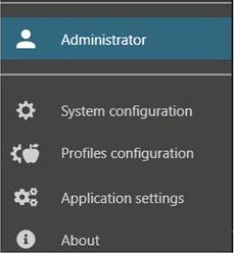
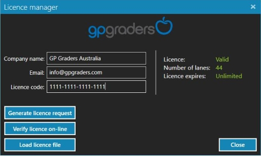

Búsqueda rápida en el manual
Manual en PDF
Puedes abrir el PDF en una pestaña nueva o verlo directamente aquí.
Visor del manual
1. Introducción al sistema gpVision™
1. Configuración
GP Vision Grader requiere la instalación de Microsoft SQL Server 2017 (versión 14.x). Se pueden usar las ediciones Standard y Express. Consulte la documentación y la especificación de cada versión de MS SQL Server en https://www.microsoft.com/.
Si MS SQL Server está instalado, asegúrese de que los parámetros de conexión sean correctos. GP Vision Grader debe instalarse de forma predeterminada en el mismo equipo que MS SQL Server. El ID de instancia de MS SQL Server debe ser SQLEXPRESS y la autenticación de Windows debe estar habilitada. Cualquier cambio en la configuración anterior requiere ajustar el archivo de configuración creado al instalar GP Vision Grader.
También es importante tener MS SQL Server instalado en la misma cuenta de Windows que GP Vision Grader. De lo contrario, podrían ser necesarios algunos cambios de permisos.
Ejecute GPVisionGraderSetup_XXX.exe y siga las instrucciones para instalar GP Vision Grader.
Si es necesario, ajuste el archivo de configuración GP Vision GraderSettings.xml creado en el directorio C:\ProgramData\GP Graders\GP Vision Grader.
Si la configuración es correcta, GP Vision Grader creará una base de datos vacía durante el primer inicio y la llenará con datos semilla.
Asegúrese de hacer una copia de seguridad de la base de datos SQL antes de realizar cualquier actualización de GP Vision Grader.
Se recomienda instalar una herramienta de administración de SQL adicional que pueda ser necesaria para realizar copias de seguridad u otras tareas de mantenimiento de la base de datos. SQL Server Management Studio 17.9 es la versión recomendada, pero cualquier versión posterior también debería ser compatible (consulte la documentación de SQL Server Management Studio para obtener información sobre compatibilidad).
2. Requisitos
La configuración mínima de la PC con GUI de GP Vision Grader debe incluir: Intel Core i7-6700, disco duro SSD de 256 GB, Windows 10 Pro o Home Edition, 8 GB de RAM, dos monitores con una resolución mínima admitida de 1600 × 900 px, dos puertos Ethernet.
3. Información general
GP Vision Grader funciona como cliente en una arquitectura cliente-servidor. Permite al operador controlar los dispositivos en todo el sistema. También registra datos de los dispositivos (como estadísticas) y los guarda en la base de datos para la generación de informes.
Este manual se basa en el supuesto de que el hardware necesario está correctamente montado, conectado y disponible, en particular:
- Cámaras / carcasas para cámaras
- Unidades de Visión
- Unidades RT
- Módulos de abandono (Grader IO)
- Iluminación LED
4. Interfaz de usuario

Descripción general de la interfaz de usuario
- Menú principal: pase el puntero del mouse sobre el área del menú o haga clic en el ícono del menú para expandir la barra de menú.
- Área de trabajo: la mayoría de las ventanas de la aplicación se abrirán como una nueva pestaña en el área de trabajo.
- Controles del modo del sistema: muestra el perfil actual y el programa de clasificación; permite iniciar o detener la clasificación.
- Indicadores de velocidad de línea, llenado y rendimiento: se actualizan periódicamente según los datos de las unidades de visión. El rendimiento puede ser estimado o basado en peso real según la configuración.
-
Estado del sistema: permite visualizar el estado de todos los componentes. Si existe advertencia o error, se habilita el botón de herramientas para iniciar reparación automática.
Registrar información de depuración: permite descargar información adicional desde la Unidad de Visión.

Acoplar / desacoplar
Cada pestaña del área de trabajo puede desacoplarse y abrirse en una ventana independiente.
Funciones comunes
- Clic derecho / Menú contextual: algunas funciones solo están disponibles mediante el menú contextual.
- Validación: errores se indican con borde rojo y mensajes emergentes.
Doble clic: inicia la acción predeterminada (normalmente editar).
Controles comunes
Selector de frutas
Permite cargar imágenes de frutas desde distintas fuentes.
- Obtener imagen: carga imágenes del Lane seleccionado según el estado del sistema.
- Pegar: obtiene la última imagen del portapapeles y permite seleccionar entre múltiples elementos.
- Importar: importa imágenes externas.
- Copiar: guarda imágenes en el portapapeles (hasta 50).
- Exportar: exporta imágenes a archivo.
- Color, Nir, Shrivel, Suave, Anotado: habilita o deshabilita vistas según hardware y algoritmo.
5. Permisos de la cuenta
Permisos de la cuenta
El usuario de GP Vision Grader puede operar bajo distintos modos de cuenta, los cuales definen el nivel de acceso a las funciones del sistema:
- Administrador: en este modo están disponibles todas las características y funciones del sistema, incluyendo la configuración completa, perfiles y ajustes avanzados de la aplicación.
- Operador: este modo no permite al usuario modificar la configuración del sistema ni los perfiles. El acceso se limita a la operación normal del sistema y a la mayoría de las funciones operativas de la aplicación.
El modo de operación actual se muestra en la parte inferior de la sección del menú de la aplicación:
Para cambiar entre los modos Operador y Administrador, haga clic sobre el elemento del menú que representa el modo de operación actual. La contraseña predeterminada para acceder al modo Administrador es: Admin.

El propósito de disponer de dos tipos de cuentas es evitar que el Operador realice cambios accidentales en la configuración del sistema, garantizando la estabilidad operativa y la seguridad de los parámetros críticos.
6. Inicio del programa
Durante el inicio de GP Vision Grader se realizan múltiples acciones. Algunas de ellas son: actualizaciones de base de datos, conexión a unidades de visión (carriles) y carga de archivos de configuración.
Si alguna acción genera un error o una advertencia, la secuencia de inicio se detendrá. Al pasar el cursor sobre el nombre de la acción, se mostrarán los detalles de la advertencia o el error.
Algunas advertencias o errores pueden bloquear la aplicación e impedir que el operador la ejecute; sin embargo, en la mayoría de los casos el botón de inicio estará activo y el operador podrá iniciarla.
7. Licencias
El programa GP Vision Grader requiere un archivo de licencia válido. La licencia limita el número de carriles que se pueden gestionar o el tiempo de uso del software.
Para obtener una nueva licencia, se debe crear un archivo de solicitud de licencia. Este archivo puede generarse desde la ventana del Administrador de Licencias, la cual se abre automáticamente al iniciar el programa si aún no se ha proporcionado una licencia válida.
En el Administrador de Licencias, introduzca el nombre de su empresa, su dirección de correo electrónico y su código de licencia. Luego haga clic en “Generar solicitud de licencia” para obtener el archivo de solicitud. Este archivo debe enviarse al representante de GP Graders, quien proporcionará el archivo de licencia correspondiente.
Una vez recibido el archivo de licencia, este puede cargarse mediante la opción “Cargar archivo de licencia” dentro del Administrador de Licencias.
Otra forma de generar una licencia es mediante la verificación en línea. Para ello, complete el formulario correspondiente y haga clic en “Verificar licencia en línea”. Este método requiere una conexión activa a internet y que la hora local del computador esté correctamente configurada.
El archivo de licencia se guarda en el directorio:
C:\ProgramData\GP Graders\GP Vision Grader\
La licencia está vinculada al hardware del equipo. Por lo tanto, para instalar GP Vision Grader en un computador nuevo se requiere una nueva licencia y la generación de una nueva solicitud de licencia.
El Administrador de Licencias también puede abrirse manualmente haciendo clic en el botón Acerca de en la barra de título de la ventana principal de la aplicación o desde el botón Acerca de en el menú principal.
8. Configuración del sistema
La configuración del sistema consta de secciones que deben configurarse en el orden indicado. La mayoría están relacionadas con la configuración del hardware, por lo que asegúrese de que todos los componentes estén correctamente montados y conectados antes de configurar el sistema.
Asegúrese de que el sistema esté en modo de configuración; de lo contrario, la configuración del sistema estará en modo de solo lectura.
Nota importante: Arranque la máquina para sincronizar la posición de los codificadores antes de configurar la cámara (requiere al menos una rotación completa del eje de la cadena). Asegúrese de que la cadena no se mueva al ajustar el enfoque de la cámara frontal o trasera hasta que la cortadora esté configurada.
8.1. Unidades RT
La Unidad RT es un componente de hardware que gestiona la comunicación y la sincronización entre las cámaras, los módulos de E/S de nivelación y las unidades de visión. Normalmente hay una Unidad RT por cada dos carriles y una por cada unidad de visión.
En esta sección, el operador puede gestionar la lista de Unidades RT y módulos de desconexión. Utilice la opción “Añadir nuevo” en la esquina inferior derecha para añadir una nueva unidad RT. Debe proporcionar un nombre y un número (el nombre es descriptivo; el número ordena la lista).
Utilice los botones correspondientes para editar y eliminar unidades RT existentes.
Módulos de deserción (módulos de E/S de Grader)
Expanda una Unidad RT existente y haga clic en el + para agregar un nuevo módulo de abandono. Se debe proporcionar la siguiente información:
- ID de bus: seleccione el bus de la unidad RT a la que está conectado el módulo de deserción. El ID 0 se refiere a Serial1 y el ID 1 se refiere a Serial2.
- Nodo: seleccione el número consecutivo del módulo en la cadena conectada a un único puerto bus/serie (la numeración comienza desde 0).
- Dirección de hardware: la dirección de hardware (MAC) está impresa en los módulos (recinto).

Los números de salida mostrados junto a cada módulo se refieren a los números de salida reales solo si se selecciona la configuración “Todas las salidas”. En otros casos, estos números deben considerarse como información sobre cuántas salidas reales se pueden conectar a la cadena dada. Consulte la sección “Desplazamientos de salida” para más información.

Diagnóstico del módulo de deserción
Si el modo de configuración está activado, el sistema mostrará el estado de la conexión entre la Unidad de Visión y cada módulo de deserción:
- Estado no disponible: no hay comunicación entre la estación del operador y la unidad de visión o entre la unidad de visión y la RTUnit.
- Sin conexión: el módulo no está conectado correctamente; verifique MAC, ID de bus, diseño y cableado.
- Conectado: existe conexión; debería pasar a Comunicación correcta después de 60 s si el enlace es estable.
- Comunicación correcta: conexión estable (> 60 s sin interrupciones).

8.2. Carriles
Un carril representa un solo carril de la máquina. Cada carril se gestiona mediante un programa informático específico instalado en una unidad Vision. Normalmente, una sola unidad Vision gestiona dos carriles; ambos están disponibles bajo la misma dirección de red, pero cada carril utiliza un puerto de comunicación diferente.
Los puertos predeterminados para dos carriles que se ejecutan en una sola unidad Vision son 20000 y 20001.
Utilice “Agregar nuevo” en la esquina inferior derecha de la pantalla para agregar un nuevo carril. También puede editar o eliminar carriles existentes.
Para agregar un nuevo carril se debe proporcionar la siguiente información:
- Nombre: identificador del carril.
- Dirección IP: dirección de red de la unidad Vision (IPv4 o IPv6).
- Puerto: puerto de comunicación de la unidad Vision.
- Número: se utiliza para ordenar los carriles en la lista.
- Unidad RT: unidad RT conectada a la unidad Vision.
- Distribución de salida maestra: solo un carril puede seleccionarse como distribución de salida maestra. Es necesario para usar el modo global de distribución de salida.
Utilice la conexión de prueba para verificar si el carril está funcionando y si la red está configurada correctamente.

Utilice Habilitar / Deshabilitar para activar o desactivar un carril. La edición solo está disponible si el carril está deshabilitado.
Utilice Buscar cámaras para encontrar la cámara después de conectarla por primera vez a la unidad Vision (puede ser necesario recargarla).
Utilice Información del software para mostrar las versiones del software de Lane. El carril debe estar habilitado y conectado.
Utilice Recargar para recargar el carril si se ha conectado una nueva cámara. Use Reconectar para reconectarse manualmente si es necesario.
Los íconos y los mensajes de advertencia o error indican el estado actual de cada carril.

Herramienta de actualización de la Unidad de Visión
Haga clic en Actualizar software en la esquina inferior izquierda para abrir la herramienta de actualización. Puede usar el archivo integrado del software del operador o cargar un archivo externo.
La columna de estado se volverá verde si la actualización fue correcta o roja si ocurrió un error. Reinicie el software del operador para recargar la configuración global.

8.3. Configuración global
Hay tres tipos de configuraciones globales:
- Estación del operador
- Calibración de la cámara
- Configuración de carril
Estación del operador
- Gamma: se aplica a todas las imágenes mostradas en el software. Los valores se usan en todas las ventanas, excepto en la configuración del sistema (existe una gamma independiente para esa sección).
- Tiene cámara frontal/trasera/izquierda/derecha: activa o desactiva opciones de la interfaz necesarias para configurar cámaras según su presencia física. Para habilitar o deshabilitar cámaras frontales o traseras es necesario conectarlas o desconectarlas físicamente de la red y volver a cargar cámaras en la Vision Unit ejecutando Buscar cámaras (ver sección Carriles).
- Calificador de peso: habilita/deshabilita la clasificación por peso.
- Tipo de fotografía de referencia (Arriba | Delante | Detrás | Izquierda | Derecha): se utiliza para detectar fruta. Los tipos se definen por el tipo de cámara y los filtros aplicados (por ejemplo, polarización, paso de banda). No confundir el tipo de foto con el tipo de cámara. Actualmente hay cuatro tipos de foto: Color, NIR, Suave y Shrivel. El tipo de foto de referencia predeterminado es NIR.
- Ajustes de tamaño: activa o desactiva el algoritmo que corrige el tamaño medido según la distancia cámara-fruta y la posición respecto al centro de la vista. La distancia debe medirse desde el punto de referencia de la cámara hasta la parte superior del rodillo de la copa. También debe indicarse la distancia entre copas (entre centros de copas adyacentes).
Calibración de la cámara
Para calibrar una cámara, se deben proporcionar los valores correctos de ganancia y obturación. Consulte la sección “Calibración de la cámara” para obtener más información sobre cómo configurar estos parámetros.
Configuración de carril
Esta sección contiene los ajustes de configuración de las unidades Vision. Cambiar estos ajustes no tendrá ningún efecto si la unidad de visión no está conectada a GP Vision Grader. La configuración se almacena en la base de datos local de la estación del operador y se envía a la unidad de visión y sus carriles correspondientes una vez establecida la conexión.
Las siguientes configuraciones dependientes del hardware deben configurarse durante la primera configuración de la máquina:
- lane_cupsPerEncoderRevolution
- lane_pulsesPerEncoderRevolution
- rtu_exitActivationLatency
- rtu_effectiveLedPowerOnTime: asegúrese de establecer este valor al menos 30 µs más que el tiempo de obturación más largo.

8.4. Cámaras de carril
En esta ventana, el operador puede gestionar las cámaras disponibles. Si una cámara está conectada, se detectará automáticamente y se mostrará en la lista. La detección automática no elimina cámaras no utilizadas; si una cámara se conecta a una unidad Vision incorrecta, debe eliminarse manualmente.
El operador debe asegurarse de que cada cámara tenga asignado el tipo de fotografía correcto, que las imágenes estén invertidas correctamente y que el enfoque y la polarización estén configurados adecuadamente. Haga clic en el ícono de la cámara para habilitar la vista previa.
Tipo de foto
Consulte más información sobre los tipos de foto en la sección Configuración global.
Fuente de la foto
Seleccione una de las siguientes fuentes según la posición física de la cámara: frontal, superior, trasera, izquierda o derecha. La cámara frontal se refiere a la que toma la primera foto de la fruta y suele estar montada en el lado de salida del domo de luz.

Transformación / rotación de imágenes
Utilice las funciones Girar horizontalmente y Girar verticalmente para transformar la imagen. Para verificar la orientación correcta, coloque una franja con texto impreso debajo de la cámara y asegúrese de que sea legible y coincida con la dirección del movimiento de las copas.
Haga clic en Guardar después de voltear la imagen para aplicar los cambios.
INCORRECTO:

CORRECTO:

Distancia de la cámara
Asegúrese de que la cámara esté instalada a la distancia correcta de las copas. Una distancia menor reduce la cantidad de copas visibles pero aumenta el tamaño de la imagen de una sola fruta.
Tamaño de copa: 1 pulgada
Distancia recomendada: 73 cm para versiones < 1.7.0 (aprox. 10–11 copas visibles, 220×220 px).
Desde la versión 1.7.0, la distancia recomendada es 52 cm (aprox. 7 copas, 300×300 px).
Tamaño de copa: 1,5 pulgadas
Distancia recomendada: 66 cm (aprox. 7 copas, 300×300 px).

Enfoque y apertura de la cámara
Establezca la apertura de la cámara en f/2. La cámara debe enfocar un objeto sobre las copas; utilice esferas de calibración o fruta real para ajustar el enfoque. Evite imágenes sobreexpuestas; ajuste ganancia, obturación y gamma si es necesario.

Polarización
Gire el filtro polarizador mientras observa la vista previa. Cuanto más oscura sea la imagen, mayor será la polarización. Ajuste el filtro para lograr la imagen más polarizada posible.
8.5. Calibración de la cámara
El propósito de la calibración de la cámara es configurar el balance de blancos y compensar las diferencias en la cantidad de luz que incide sobre las copas ubicadas en el centro y en los bordes de la vista de la cámara.
Siga los pasos a continuación para realizar la calibración:
1. Habilite la vista previa de la cámara y coloque la franja de calibración debajo de la cámara.
2. Establezca los valores iniciales de ganancia y obturación en los valores predeterminados haciendo clic en Cámara predeterminada: ganancia / obturador.
3. Configure el área de calibración ajustando Y1 y Y2 en el lado derecho de la vista previa y X1 y X2 en la parte inferior. Ajuste ganancia u obturador para obtener la imagen más brillante posible sin sobreexponerla.
Si la imagen es demasiado tenue, aumente la ganancia; si es demasiado brillante, disminuya el obturador. La ganancia debe estar siempre al mínimo si el obturador es inferior a su valor inicial, y viceversa. El obturador nunca debe superar su valor inicial.
A continuación se muestran ejemplos de imágenes sobreexpuestas y correctas:
Sobreexpuesta:

Correcta:

Utilice píxeles sobreexpuestos y brillo promedio como indicadores. El brillo máximo es 255 y el brillo promedio debe ser aproximadamente 190. No debe haber píxeles sobreexpuestos.

4. Copie los valores de ganancia y obturación en el tipo de foto correspondiente en la sección Calibración de la cámara de la configuración global y guarde la configuración.
Valores predeterminados de ganancia y obturación:
- Color: ganancia 1, obturador 80
- NIR: ganancia 95, obturador 300
- Suave: ganancia 100, obturador 300
- Shrivel: ganancia 0, obturador 50
No debería haber una diferencia significativa entre estos valores y los obtenidos tras la calibración.
5. Ajuste nuevamente el área de calibración (Y1, Y2, X1, X2). El área no debe exceder la franja de calibración. Para cámaras superiores, X1 y X2 deben cubrir todo el ancho.

Para cámaras frontales y traseras, ajuste X1 y X2 para mantener la región de interés (ROI) dentro del área de la franja y cubriendo la zona donde se ubica la fruta.

6. Haga clic en Ganancia/obturador de cámara predeterminado, luego en Restablecer calibración, después en Balance de blancos (solo para cámaras a color) y finalmente en Calibrar la cámara para iniciar la calibración automática.
Si la calibración es correcta, la imagen tendrá un color sólido en escala de grises. En caso contrario, el sistema mostrará errores como imagen demasiado oscura o demasiado brillante. Repita los pasos 3 a 6 hasta completar correctamente la calibración.

7. Repita los pasos 1 a 6 para cada tipo de fotografía y posición de cámara en el mismo carril.
8. Repita los pasos 5 y 6 para las demás cámaras y carriles. No edite la sección de calibración de la cámara en la configuración global durante este proceso para asegurar valores consistentes.
Si alguna calibración resulta demasiado brillante u oscura, repita todo el proceso desde el paso 1.
8.6. Calibración de tamaño
Es necesario calibrar el tamaño para convertir correctamente las medidas de la fruta en píxeles a la unidad real. La unidad base del software es el milímetro (mm). La calibración debe realizarse en cada carril (no es necesario para todas las cámaras). Por defecto se debe usar la cámara de referencia, pero se puede cambiar si es necesario.
Coloque las bolas de calibración en las copas:
- Para cámaras superior, izquierda y derecha: use al menos tres bolas si el ajuste de tamaño está desactivado, o solo una bola en la copa central si el ajuste de tamaño está activado.
- Para cámaras frontal y trasera: use una bola.
Habilite la vista previa de la cámara y configure el área de calibración (ROI) ajustando Y1, Y2, X1 y X2. Asegúrese de que todas las bolas de calibración queden dentro del área. Reduzca el valor de gamma si las copas no son visibles.
Asegúrese de que el tamaño del objeto de referencia esté configurado de acuerdo con el tamaño de las bolas utilizadas. Ajuste el diámetro mínimo de fruta y el umbral hasta que solo se marquen las bolas de calibración.
Evite una imagen demasiado tenue o demasiado brillante, ya que puede afectar el tamaño aparente de las bolas: una imagen demasiado brillante puede hacer que se vean más grandes por reflejos; una tenue puede producir el efecto contrario.
Utilice el panel de configuración de la izquierda para ajustar: ganancia, obturador, gamma, grosor de línea y color.


Haga clic en Aplicar para capturar el resultado de la calibración y luego en Guardar para almacenarlo en la base de datos.
8.7. Cortador
El cortador debe configurarse para que el software pueda comparar las imágenes de fruta de las cámaras adyacentes. También permite establecer el número y la posición de las copas visibles en la imagen de la cámara y configurar la distancia entre ellas.
Comience configurando el número de copas base para las cámaras superiores en la sección “Posición de la cámara: SUPERIOR” al número de copas completas visibles menos uno. Esta configuración global se aplicará a todas las cámaras montadas en posición superior.
Asegúrese de modificar el número de copas base solo durante la configuración del primer carril. Si se cambia posteriormente, deberá repetir la configuración del cortador para todos los carriles. Lo mismo aplica para el ancho y alto de las copas; no se recomienda modificar los valores predeterminados, ya que podría afectar el rendimiento del sistema.

Una vez configurados los tamaños y la cantidad de copas, proceda con los siguientes pasos, configurando un carril a la vez, preferiblemente comenzando con cámaras frontales, luego superiores y finalmente traseras:
- Haga clic en uno de los botones Configurar (marcados en rojo en la captura).
-
Coloque las bolas de calibración en las copas:
- Al menos tres bolas para cámaras superior, izquierda y derecha.
- Una bola para cámaras frontal y trasera.
- Regrese a la vista general del cortador y ajuste el umbral del cortador y el diámetro mínimo de fruta hasta que las bolas estén correctamente delineadas.
- Seleccione el panel izquierdo para ver la vista previa de copas y ajuste X izquierda, Y izquierda, Y central, X derecha y Y derecha para que las copas queden dentro de las áreas de vista previa.

Para cámaras frontal y trasera, solo se configura una copa, por lo que únicamente están disponibles los parámetros X izquierda e Y izquierda.

El ancho máximo del área de previsualización (marcado con el recuadro rojo) debe ser al menos una copa menor que el área visible. Esto compensa desalineaciones de la cámara que podrían provocar que no se vean las mismas copas entre cámaras adyacentes.

INCORRECTO:

CORRECTO:

5. Ajuste la posición del punto de referencia para que la línea apunte directamente al marcador visible en la vista previa. Este punto se utilizará para calcular los desplazamientos de salida. Solo debe ajustarse para la cámara de referencia montada en la posición superior.

6. Seleccione el segundo panel (derecha) y ajuste el cortador de la cámara dependiente hasta que los contornos de las bolas coincidan con las bolas reales.
INCORRECTO:

CORRECTO:

7. Repita el paso anterior para cada cámara dependiente del carril.
8. Configure la primera copa. Esta se refiere siempre a la primera imagen de la fruta. Si se utiliza cámara frontal, la primera copa es la visible; si no, corresponde a la copa más a la izquierda vista por la cámara superior.

Ejemplo de configuración de primera copa:
- Frontal: 0 (distancia entre A y A)
- Superior: 1 (distancia entre A y B)
- Trasera: 4 (distancia entre A y E)
9. Guarde los cambios o restaure la configuración anterior antes de cerrar la ventana. Al cerrar sin guardar, los cambios se perderán. Confirme que el punto de referencia esté verificado marcando la opción correspondiente antes de guardar.

8.8. Calibración de peso
La calibración de peso se puede habilitar en la configuración global. Requiere que la celda de carga y el sensor de proximidad de sincronización de línea estén montados y conectados a la RTUnit. La clasificación por peso requiere una RTUnit por carril.
Montaje del sensor de proximidad de sincronización de línea
Asegúrese de que el sensor esté montado en una posición donde una de las copas quede aproximadamente en el centro de la celda de carga cuando se active la señal de sincronización de línea.

Descripción general / Configuración del clasificador de peso
Comience configurando los siguientes parámetros globales para todos los carriles:
- Peso de calibración: masa usada como referencia durante la calibración.
- Número de muestras de calibración requeridas: define cuántas veces debe colocarse la masa en el carril. La masa debe colocarse en un recipiente diferente cada vez. Más muestras permiten definir mejor la desviación óptima de la señal de sincronización de línea para tomar mediciones de peso.
- Diferencia mínima entre el peso del vaso vacío y el del vaso lleno durante la calibración: define la diferencia mínima como porcentaje respecto a la lectura del vaso vacío. Ejemplo: si se configura en 20% y el vaso vacío marca 1000, con la masa debe marcar ≥ 1200; si no, el vaso no se reconocerá como lleno. Ajuste según la celda de carga utilizada.

Diagnóstico
Una vez configurados los parámetros globales, utilice Diagnóstico para verificar: que las celdas de carga estén conectadas correctamente y que la diferencia entre taza vacía y llena sea adecuada.
Nota: la línea de referencia se puede arrastrar o mover usando el control deslizante.

Contando tazas
Asegúrese de que los parámetros lane_pulsesPerEncoderRevolution y lane_cupsPerEncoderRevolution en la configuración global sean correctos y que los sensores de sincronización estén conectados a las RTUnits.
Inicie el conteo de vasos para cada carril y siga las instrucciones en pantalla. El procedimiento solo puede ejecutarse para un carril, pero el resultado se puede guardar para todos si el número de copas es igual (marque “Aplicar a todos los carriles habilitados” antes de guardar).

Calibración
Configure Vision para cargar la distancia de la celda de carga (en copas) midiendo la distancia entre el punto de referencia (el mismo que se usa en la configuración del cortador) y el centro de la celda de carga.

Inicie la calibración y siga las instrucciones en pantalla:
- Poner en marcha la máquina y esperar la señal de sincronización de línea.
- Esperar hasta que la velocidad del carril se estabilice y alcance la velocidad deseada.
- Colocar la masa de referencia una vez para determinar la diferencia real entre vaso vacío y lleno mientras la máquina está en funcionamiento.
- Esperar hasta que el programa recopile la cantidad necesaria de medidas de peso de vasos vacíos.
- Colocar la masa de referencia el número de veces necesario para recolectar medidas de peso de vasos llenos.
Una vez recopilados los datos, se mostrarán las tablas de configuración del punto de referencia del clasificador de peso. El punto de referencia se establece automáticamente para minimizar la desviación estándar, pero puede ajustarse manualmente antes de guardar.

Guardar y continuar con el siguiente carril
Los resultados se muestran en una pantalla de resumen para comparar carriles y verificar la velocidad a la que se calibraron. La calibración y la velocidad de funcionamiento no deben variar más del 10% para asegurar precisión. Si se supera ese límite, se mostrará una advertencia en el estado del sistema.
El desplazamiento de peso seco (WG) es el porcentaje del ancho de la celda de carga calculado a partir del punto de referencia y el número de lecturas por vaso. El promedio del desplazamiento es la lectura media de la celda de carga para vasos vacíos. El divisor es el valor promedio de la celda de carga por unidad de masa, basado en vasos llenos durante la calibración.

8.9. Salidas
En esta ventana, el operador puede agregar y eliminar salidas. Además, permite configurar qué salidas se considerarán como desperdicio.
La opción “Es desperdicio” solo afecta a las estadísticas del sistema y no modifica el comportamiento físico de las salidas durante la clasificación.
8.10. Etiquetadoras
En esta ventana, el operador puede agregar y quitar etiquetadoras del sistema.
Las etiquetadoras configuradas estarán disponibles posteriormente para ser asignadas a salidas lógicas dentro del módulo de Asignaciones de E/S.
8.11. Asignaciones de IO

El módulo Asignaciones de E/S permite al operador asignar las salidas de los módulos de E/S del Clasificador a salidas lógicas y/o etiquetadoras.
El operador puede utilizar uno de los diseños predefinidos seleccionando una de las opciones disponibles en la columna Diseño.

Si ninguno de los diseños predefinidos se ajusta a la configuración real del hardware, es posible asignar manualmente cada puerto seleccionando las salidas o etiquetadoras disponibles desde la lista.

Tenga en cuenta que la lista solo muestra salidas y etiquetadoras no asignadas.
El fondo amarillo indica puertos no utilizados dentro de la configuración actual.
8.12. Desplazamientos de salida
El desplazamiento de salida es la distancia entre una salida y el punto de referencia configurado en la configuración del cortador. La distancia se mide en copas y debe medirse manualmente.
Primero, se ajusta ejecutando la calibración de salida. Es necesario asignar salidas a los puertos de E/S en Asignaciones de E/S antes de iniciar la calibración.
Copiar salida o Copiar carril permite copiar rápidamente los desplazamientos entre carriles y salidas. Esto puede ser útil, ya que los módulos de salida deben montarse a la misma distancia del punto de referencia en cada carril (esto puede ocurrir solo en carriles pares e impares).

Inicie la calibración de salida cuando se hayan proporcionado todos los desplazamientos y diseños de salida.
Conecte el módulo de calibración LED a la salida LED del módulo de punción conectado a la salida/puntera que se está calibrando. Asegúrese de que la máquina esté en funcionamiento y marque la casilla junto al número de salida calibrada.
La luz intermitente del módulo de calibración LED crea un efecto estroboscópico que permite ver la posición exacta de la copa sincronizada con la activación del módulo de punción correspondiente.
Asegúrese de que el módulo de calibración apunte al módulo de punción correcto y ajuste el desplazamiento hasta que la puntera apunte exactamente al centro de la copa. Repita el proceso para cada puntera.
INCORRECTO:

CORRECTO:

Guarde los cambios antes de cerrar la ventana de Desplazamientos de salida.
8.13. Pruebas de salida
Las pruebas de salida permiten al operador activar las salidas seleccionadas para verificar su correcto funcionamiento.
Las salidas se activan secuencialmente, comenzando por la salida 1 para todos los carriles simultáneamente.
El intervalo de activación se puede configurar mediante uno de los valores predefinidos disponibles en los botones de la parte superior.
Cada salida puede seleccionarse de forma individual haciendo clic en la celda correspondiente de la tabla.
Al hacer clic en el encabezado de fila, el operador puede seleccionar todas las salidas del carril correspondiente.
Al hacer clic en el encabezado de columna, se seleccionan todas las salidas del número indicado.

8.14. Desplazamientos de la etiquetadora
Los desplazamientos de la etiquetadora funcionan de la misma manera que los desplazamientos de salida.
Consulte la sección “Desplazamientos de salida” de este manual para obtener información detallada sobre el procedimiento de configuración y calibración.
8.15. Prueba de etiquetadora
La prueba de etiquetadora funciona de la misma manera que la prueba de salida.
Consulte la sección “Pruebas de salida” de este manual para obtener información detallada sobre el procedimiento de prueba.
9. Configuración de perfiles
El sistema de perfiles permite al operador configurar los parámetros de visión utilizados durante la clasificación de fruta. Estos ajustes pueden variar dependiendo del color de la fruta, la rotación durante el transporte y la complejidad del programa de clasificación seleccionado.
Desde el perfil es posible definir el número de imágenes utilizadas para la clasificación (conteo de vasos), permitiendo optimizar el rendimiento de la unidad de visión cuando se utilizan algoritmos más complejos o se trabaja con limitaciones de procesamiento.
Algunos programas de clasificación requieren una menor cantidad de imágenes por fruta para cumplir con los requisitos de rendimiento de la unidad Vision.
Para acceder a esta configuración, asegúrese de haber iniciado sesión como administrador y de que el sistema se encuentre en modo de configuración. Abra la ventana de Configuración de Perfiles desde el menú principal.

En la parte inferior de la ventana, seleccione el perfil que desea editar. Es posible modificar el nombre del perfil y elegir uno de los algoritmos de visión disponibles.
Configure el número de imágenes tomadas ajustando los siguientes parámetros:
- Imágenes por vaso: define cuántas veces la cámara capturará una nueva imagen cada vez que la máquina avance un vaso.
- Número de imágenes tomadas: define cuántas imágenes serán capturadas y procesadas por cada fruta y por cada tipo de fotografía disponible (solo para cámaras Top).
El número máximo de imágenes tomadas está limitado por la siguiente fórmula:
(Cantidad de vasos base − 1) × Imágenes por vaso + 1
La cantidad de vasos base puede configurarse en la ventana de configuración de la cortadora (ver sección correspondiente de este manual).
Utilice la opción "Establecer como actual" para definir el perfil que será utilizado durante la clasificación. El perfil actual no puede ser eliminado y solo puede modificarse en modo de configuración.
Si el nuevo perfil actual utiliza un algoritmo de visión diferente al del perfil anterior, el programa de clasificación dejará de estar configurado como actual debido a la compatibilidad entre algoritmos. El perfil activo se muestra en la barra superior de la ventana principal.

Utilice las pestañas ubicadas en el lateral izquierdo de la ventana para acceder al formulario de configuración de cámaras.

Seleccione el perfil editado desde la lista ubicada en la esquina superior izquierda de la ventana y ajuste los parámetros específicos de la cámara según sea necesario. Una vez realizados los cambios, guarde la configuración.
La opción "Copiar por tipo de foto" permite copiar la configuración de la cámara seleccionada a todas las cámaras que utilicen el mismo tipo de fotografía, agilizando el proceso de configuración.
10. Programas de calificación
Un programa de clasificación consta de un conjunto de parámetros y opciones de configuración que determinan cómo se clasifica la fruta. Cada programa debe asignarse a un perfil que determina el algoritmo de visión que se utilizará para la clasificación. GP Vision Grader permite al operador crear múltiples programas de clasificación y alternar entre ellos durante la clasificación. Utilice el menú principal para abrir la ventana de programas de clasificación. Añada un nuevo programa de clasificación: asígnele un nombre y seleccione un perfil.

Utilice "Establecer como actual" para cambiar el programa de calificación actual. Este programa se muestra en la barra superior de la ventana principal:

Los programas de calificación se pueden clonar, eliminar, importar y exportar.

Haga doble clic o seleccione Abrir/editar para editar el programa de calificación.
10.1. Tabla de clasificación
La tabla de calificación consta de siete secciones:

- Arrastrar y soltar: permite al operador cambiar el orden de las clases arrastrando y soltando las filas de la tabla. El programa de clasificación procesa la tabla de clasificación de arriba a abajo. Si no se cumplen las condiciones de la primera clase de la tabla, se analiza la siguiente. La fruta clasificada se asignará a la primera clase que cumpla las condiciones.
- Estado: muestra advertencias y errores. En el ejemplo anterior, el símbolo de advertencia indica que no se han especificado condiciones de clasificación para la nueva Clase 1. Esto podría provocar que todas las frutas se asignen a esa clase. Pase el cursor sobre el símbolo de advertencia para ver la información sobre herramientas con los detalles de la advertencia.
- Clase: muestra el nombre de la clase y, opcionalmente, el nombre del grupo asignado (entre paréntesis). Cada clase se representa en una sola fila en la tabla de calificación. Utilice el botón "Añadir clase" en la esquina superior derecha de la ventana para añadir una nueva clase o utilice el menú contextual para añadir una nueva clase directamente debajo de la clase seleccionada. El nombre se asignará automáticamente. Haga clic en la celda de la columna "Clase" para cambiar el nombre de la clase. Es importante recordar que los nombres de las clases deben ser únicos; de lo contrario, GP Vision Grader no permitirá que el operador guarde los cambios y mostrará un mensaje de error junto al botón "Guardar".

Haga clic derecho en la fila de la tabla para agregar/editar/copiar/eliminar la clase (aparecerá un menú contextual)

La ventana del editor de clases permite al operador modificar las condiciones de las entidades (en particular, las relacionadas con las entidades mostradas en modo compacto) y la asignación de grupos. Los grupos se utilizan únicamente para generar informes; si no se asigna ningún grupo, se usará el nombre de la clase.

4. Salidas: Cada clase debe tener al menos una salida asignada. Para asignar salidas, introduzca el número de salida separado por comas en la columna "Salida". También es posible proporcionar rangos de números de salida, introduciendo el primer y el último número de salida en un rango separado por un guion. A continuación, se muestran algunos ejemplos de asignaciones de salida correctas:
- 1
- 2, 3, 4
- 24
- 24,7,911
5. Características: todas las características utilizadas para la calificación en el programa de calificación se muestran como columnas en la tabla. Haga clic en "Administrar características" para agregar, eliminar, cambiar los nombres o el orden de las características (consulte la sección "Administrar características" de este manual para obtener más información).
6. Condiciones de clasificación: cada clase puede tener un conjunto de condiciones de clasificación que determinan si la fruta se asignará a esa clase. Es importante tener en cuenta que las condiciones de clasificación de una sola clase deben considerarse como si existiera una operación lógica AND entre ellas. Esto significa que todas las condiciones de clasificación de la clase dada deben cumplirse para asignar la fruta a esa clase. Existen dos tipos de condiciones de clasificación: número/mínmáx o verdadero/falso.

En el ejemplo anterior hay dos características, pero solo una tiene una condición de calificación especificada. La condición de calificación indica que el % promedio de Shivel de la característica debe ser mayor o igual a 0,18. No se especifica un valor máximo. La casilla de verificación "Tallo" permanece vacía, por lo que se omitirá. Es importante tener en cuenta que las características de verdadero/falso utilizan casillas de verificación triestado:
- sin condición de calificación
- la característica debe ser falsa
- la característica debe ser verdadera
7. Otros: muestra las condiciones de las características relacionadas con las características mostradas en modo compacto. El signo más indica varias condiciones de características. Haga clic con el botón derecho en una fila de la tabla para abrir el menú contextual y la ventana del editor de clases para editar la condición de la característica relacionada. Utilice el administrador de características (Administrar características) para cambiar el modo de visualización entre estándar y compacto.
Etiquetadoras
Si se agregan etiquetadoras (consulte Configuración del sistema > Etiquetadoras), la columna Etiquetadora aparecerá entre las secciones "Salida" y "Características" de la tabla. Utilice el menú desplegable de etiquetadoras para seleccionar la que se usará para la clase dada.

Interruptor de alternancia de actualizaciones de API
El interruptor "Actualizaciones de API" aparece en la esquina superior derecha, sobre la tabla de calificación, si las actualizaciones del programa de calificación a través de la API están habilitadas (ver: Configuración de la aplicación). Al habilitar las actualizaciones de API para el programa en cuestión, se deshabilitan la tabla de calificación y todas las funciones de gestión del programa de calificación relacionadas con este. El interruptor solo está activo si no hay cambios pendientes. Las Actualizaciones de API deben estar habilitadas para editar el programa de calificación a través de la API.
Guardar/Restaurar, Guardar y aplicar/Restaurar
Cada cambio realizado en el programa de calificación debe guardarse o cancelarse. Mientras no se guarde y aplique, los cambios no tendrán ningún efecto en la calificación. Utilice los botones Guardar y Restaurar en la esquina inferior derecha de la ventana. El botón Guardar indicará los cambios no guardados activando el icono del disco. El botón Guardar solo guardará los cambios pendientes en la base de datos. Si el operador está editando el programa de calificación actual y el sistema está en modo de calificación, el botón Guardar será reemplazado por el botón Guardar y aplicar, que guarda el programa de calificación en la base de datos y envía la nueva configuración a las unidades Vision.
No hay cambios pendientes:

Cambios no guardados:

Guardar y aplicar:

Vista previa de los cambios de distribución
Antes de guardar, el operador puede obtener una vista previa de cómo los cambios influirán en la distribución de la fruta. La distribución se calcula en base a la fruta ya clasificada almacenada en la memoria de la Unidad de Visión. El número de elementos almacenados para calcular los cambios de distribución se puede ajustar en la configuración global. El gráfico se puede ordenar en orden descendente o por orden de clases en la tabla de calificación (si se selecciona la distribución por clase). Al pasar el cursor sobre las columnas del gráfico, se muestra la distribución en puntos porcentuales de toda la distribución y los porcentajes relacionados con la columna correspondiente.
- Azul – línea base – porción sin cambios de la distribución
- Verde – aumento de la distribución
- Gris – disminución de la distribución
Entonces la distribución total después de los cambios sería Azul + Verde, antes de los cambios: Azul + Gris. El número sin clasificar en la esquina superior derecha muestra el porcentaje de fruta que no cumple con los criterios de ninguna clase en la tabla de clasificación.
Guardar, Guardar y Aplicar funcionan igual que en la tabla de calificación. Volver permite al operador volver a editar el programa de calificación sin guardar los cambios.
El botón "Editar programa" deshabilita la vista previa de los cambios de distribución. Esto se debe a que editar el programa de calificación puede cambiar la lista de funciones disponibles. La opción "Administrar funciones" aún se puede usar, ya que no afecta la lista de funciones disponibles; solo las agrega o elimina de la tabla de calificación.

Editar programa
Editar programa abre la ventana de configuración del programa, que permite al operador modificar la configuración del programa y gestionar la lista de funciones disponibles. Consulte la sección "Editar programa" de este manual para obtener más información.
Indicador de programa actual
La línea vertical verde en el lado izquierdo de la pestaña del programa de calificación indica que el programa seleccionado es el programa actual.

10.2. Distribución de salidas
El módulo de distribución de salidas permite al operador configurar un tipo específico de distribución de fruta dentro de los grupos de salidas. Para añadir una nueva distribución de salidas, haga clic en el botón "Añadir distribución de salidas". Complete el formulario con la siguiente información:
-
Modo:
- Global: cuenta los elementos globalmente (toma en cuenta todos los carriles al agregar elementos). Tenga en cuenta que el modo global requiere que se defina el maestro de distribución de salida (consulte Configuración del sistema > Carriles). El maestro de distribución de salida es responsable de resolver la salida según la clase reportada por los carriles; en otras palabras, los carriles esclavos preguntan al maestro de distribución de salida dónde expulsar cada elemento.
- Local: cada carril cuenta los artículos individualmente.
-
Tipo:
- Conteo: distribución por número de elementos calificados.
- Peso: distribución por peso de los artículos clasificados.
- Cuantiles: distribución por característica seleccionada; el número de cuantiles depende del número de salidas elegidas.
- Característica: requerida solo cuando se selecciona el tipo Cuantiles.
- Elementos cuantílicos: número de elementos recientes utilizados para calcular rangos de cuartiles para la característica seleccionada.
-
Secuencia de salida: lista de salidas entre las que se distribuye la fruta. Tenga en cuenta que el orden de salida no importa;
las salidas se ordenarán en orden ascendente según su número.
- Salida: número de salida.
- Cantidad: requerida para los tipos Cantidad y Peso (significa cantidad o peso respectivamente).
- Unidad: requerida para el tipo Peso.

Es importante tener en cuenta que:
- La salida no se puede asignar a más de una distribución.
- Si una clase se asigna a una salida que pertenece a una de las distribuciones, todos los elementos calificados como esta clase se redirigirán automáticamente al módulo de distribución para resolver el número de salida.
Ejemplo: La clase 1 se asigna a las salidas 3 y 4. El operador ha definido una distribución para las salidas 1, 2 y 3. Si un artículo se clasifica como Clase 1, se expulsará a la salida 1, 2 o 3 (según el estado actual del módulo de distribución). Nunca se expulsará a la salida 4, ya que la Clase 1 está asignada a la salida 3, lo que resulta en que todos los artículos se redirijan a la distribución de las salidas 1, 2 y 3.
Haga clic derecho en la tabla de distribución Salir para editar o eliminar la distribución:

10.3. Administrar funciones
En esta ventana, el operador puede agregar o quitar características a/de la tabla de clasificación.

La tabla de la izquierda muestra las características añadidas a la tabla de clasificación. La tabla de la derecha muestra todas las características disponibles. Haga doble clic o seleccione y use las flechas centrales para añadir o eliminar una característica de la tabla de calificación.
Características elegidas:
Elija uno de los dos modos de visualización disponibles:
- Estándar: se muestra como una columna separada en la tabla de calificación.
- Compacto: se muestra en la última columna de la tabla de clasificación (Otro), visible solo si la condición de la característica está definida para la clase dada.
Utilice las flechas y el icono de edición para cambiar el orden o asignar un nombre personalizado. También se pueden reordenar las características seleccionadas arrastrando y soltando el nombre. Este nombre se mostrará en la tabla de clasificación. El orden también se aplicará a la tabla de clasificación. El color rojo indica que la característica ya no existe (por ejemplo, debido a que se eliminó el espectro relacionado).
10.4. Editar programa
Cambie entre las pestañas para configurar el programa de calificación.
10.4.1. Detección de frutas
Todos los parámetros relacionados con la detección de fruta y tallo se pueden configurar en la pestaña de detección de fruta. Cargue imágenes en el selector de fruta y ajuste los parámetros mientras observa la vista previa de la imagen. El borde verde indica que la fruta se ha detectado correctamente.

Seleccione uno de los tipos de anotaciones disponibles (Fruta/Tallo) para ver diferentes anotaciones en la ventana de vista previa. Es importante tener en cuenta que al editar los parámetros a la izquierda, el tipo de anotación cambiará automáticamente (Fruta para los parámetros de detección de fruta, Tallo para los parámetros de detección de tallo).
Utilice Exportar/Importar para exportar e importar parámetros de detección de fruta (espectros de tallo y parámetros relacionados). Tenga en cuenta que los distintos algoritmos de fruta pueden utilizar parámetros diferentes. Importar la configuración de un programa con un algoritmo diferente conservará solo el conjunto de parámetros común a ambos algoritmos.
A continuación puede encontrar un ejemplo de parametrización incorrecta: Debido al bajo umbral de detección de fruta, algunos elementos del fondo podrían detectarse como fruta (fondo verde, sin borde azul). En este ejemplo, la fruta se detecta correctamente, pero es muy probable que no funcione con otras imágenes.

Si se reduce un poco el diámetro mínimo, el programa comienza a ver más frutas y el algoritmo de detección de frutas devuelve falso porque parte de esa fruta está fuera de la imagen:

Para configurar la detección del tallo se deben configurar los parámetros relacionados con el tallo y dos espectros:
- Tallo externo e interno: se utiliza para detectar el tallo fuera de la fruta (marca azul). También se utiliza para detectar el tallo dentro de la fruta, pero solo si el área encontrada conecta con un tallo fuera de la fruta.
- Tallo interno: se utiliza para detectar el color del tallo en el interior de la fruta (no se requiere conexión con el exterior). En general, este espectro debería ser más restrictivo que los espectros de tallo externo e interno.

Asegúrese de realizar la prueba en más de una imagen. Restablezca los valores predeterminados si es necesario. Consulte Spectra para obtener más detalles sobre cómo funciona el selector de espectro.
Detección de frutas para ostras
El algoritmo de ostras separa el fondo por color. El color de fondo se selecciona mediante dos umbrales en el rango de tono. En el ejemplo a continuación, el azul es el color de fondo (indicado por la ausencia de una línea blanca bajo el control de tono). En este ejemplo, se utilizan colores distintos del azul para detectar el cuerpo del fruto (indicado por una línea blanca).

10.4.2. Espectros
Un espectro en GP Vision Grader define un conjunto de rangos de valores de diferentes canales. Estos rangos se utilizan para calcular el porcentaje de la superficie de la fruta dentro de dicho rango y los valores promedio de los canales de color dentro de dicho rango. Estos valores calculados se presentan como características que pueden utilizarse en la tabla de clasificación.
Agregue un nuevo espectro para abrir la ventana del editor de espectro.

Asígnele un nombre y, opcionalmente, una descripción. Cargue la imagen en el selector de frutas y seleccione una de las imágenes cargadas para previsualizarla. Si la imagen cargada era una fruta real clasificada (la fruta se cargó en modo de clasificación), sus valores característicos estarán disponibles en la parte superior izquierda de la ventana.
Selector de rango
De forma predeterminada, se crea un rango que cubre todo el espectro. Esto significa que toda la fruta debe estar cubierta por el color del rango. Ajuste los selectores de rango arrastrando los bordes o las esquinas del selector de rango. Mantenga presionada la tecla Ctrl para mover todo el rango. Haga clic para agregar o eliminar rango. Seleccione rangos haciendo clic en los números. Se pueden agregar hasta cinco rangos para cada espectro. Se muestran los valores reales seleccionados por el rango en cada canal junto al canal indicado. Use los botones copiar y pegar para copiar rangos entre espectros. Elimine primero todos los rangos para pegar los rangos copiados en la memoria (el botón Pegar estará deshabilitado mientras exista un rango).

Ajuste las posiciones del selector de rango para cada canal disponible. Aquí está la lista de canales disponibles:
- Tono, Sat, Val: esos son los canales HSV de la imagen de la cámara a color.
- NIR: imagen NIR.
- NIR Grad – Gradiente NIR: detecta cambios en el valor de los píxeles en la imagen NIR, se puede utilizar para detección de bordes (arrugas).
- NIR Equ – NIR Equalized – Versión ecualizada de la imagen NIR: la ecualización debe hacer que el valor promedio de los píxeles sea igual a 128 para cada imagen. Permite detectar los puntos más brillantes o más oscuros.
Visualización del valor de los píxeles
Los valores de píxeles de la imagen previsualizada se pueden visualizar en el control Selector de rango, están disponibles las siguientes herramientas:
- activa el modo de arrastre
- activa el modo de selección de color: cada píxel seleccionado se visualiza en el selector de rango
- goma – elimina la selección de píxeles
- deshacer – revierte la última selección
- borra la selección
Los puntos en el selector de rango (a la izquierda, imagen inferior) representan los valores de los píxeles seleccionados (píxeles naranja y azul claro en la vista previa de la imagen a la derecha). Los píxeles rosa (Rango) y azul claro (superpuestos) en la vista previa de la imagen representan los rangos seleccionados. El color auxiliar define el color de las líneas de ayuda. Use para mostrar/ocultar anotaciones y líneas de ayuda.

El operador puede cambiar los colores si es necesario.

Hay dos ventanas de vista previa de imágenes que permiten al operador comparar fácilmente diferentes tipos de imágenes. Utilice el menú desplegable sobre la vista previa para cambiar el tipo de imagen.

Conteo puntual
Algunos rangos pueden provocar que se muestre una gran cantidad de puntos en la vista previa de la imagen. En algunos casos, puede ser útil eliminar los puntos más pequeños o contarlos. Utilice la opción "Calcular puntos" para ello. Hay tres modos posibles:
- No hacer nada: no se realiza ninguna eliminación ni recuento de manchas.
- Eliminar puntos pequeños: elimina los puntos menores que el umbral establecido (en unidades cuadradas o porcentaje). Los puntos eliminados no se tendrán en cuenta al calcular los valores porcentuales del espectro cubierto ni los valores promedio.
- Tres clases: divide los puntos en tres clases: pequeño, mediano y grande. Al habilitar este modo, se crean características adicionales que representan el número de puntos en cada una de las tres clases.
Parámetros del espectro
Se pueden configurar los siguientes parámetros del espectro:
- Margen de seguridad corporal ignorado: en la unidad del sistema (mm por defecto): define el ancho del área ignorada en el borde de la fruta.
- Margen de seguridad del tallo ignorado: en unidades del sistema (mm por defecto): define el ancho del área ignorada cerca del tallo (si existe tallo).
- Distancia mínima al tallo: en unidades del sistema (mm por defecto). Puede activarse o desactivarse (casilla de verificación). Define la distancia mínima al tallo. Si alguna parte de un foco se encuentra dentro de esa distancia, se ignorará todo el foco.
- Omitir imágenes sin tallo: las imágenes sin tallo no se tienen en cuenta al calcular características del espectro.
- Mínimo de imágenes presentes: si no se encuentra el espectro en la cantidad dada de imágenes, las características del espectro agregado (como: porcentaje promedio cubierto, etc.) devolverán 0. Los valores específicos de la imagen devolverán los valores reales.
- Mínimo de imágenes presentes consecutivas: el mínimo de imágenes presentes cuenta las imágenes consecutivas solo.
- Posición de la cámara: seleccione para qué fuentes de fotos (posiciones de cámara) se calcularán las características relacionadas con el espectro dado. Por razones de rendimiento, no se recomienda seleccionar posiciones de cámara que generen características no utilizadas en la tabla de clasificación.
Eliminar/editar espectro
Cierre la ventana del editor de espectro para volver a la lista de espectro. Utilice el menú contextual para exportar, editar o eliminar un espectro existente. También se puede hacer doble clic para abrir el editor de espectro. Es importante tener en cuenta que al eliminar el espectro también se eliminarán las características relacionadas.

10.4.3. Puntos blandos
Todos los parámetros relacionados con los puntos suaves se pueden ajustar en la pestaña Puntos suaves. Cargue las imágenes en el selector de frutas y ajuste los parámetros mientras observa la visualización en la vista previa de la imagen.

Margen de seguridad corporal en puntos blandos: representado por la línea azul en la vista previa. Los puntos blandos constituyen el margen de seguridad, representado por la línea roja en la vista previa.
Eliminar puntos largos con una relación de rectángulo delimitador menor que: ignora los puntos suaves largos según la relación del rectángulo delimitador: 0: no se produce ninguna eliminación; 1: se ignoran todos los puntos suaves, excepto aquellos con rectángulos delimitadores cuadrados.
Eliminar el punto blando más grande en imágenes sin tallo: ignora el punto blando más grande si no se encuentra el tallo; se aplica por imagen.
Los siguientes parámetros se refieren a puntos blandos pequeños y grandes:
- Área mínima: área mínima del punto en mm2.
- Umbral bajo: un valor entre 0 y 100, la probabilidad de un punto suave de todos los píxeles que tengan un valor inferior al umbral dado será del 100% (los píxeles más oscuros tienen valores más bajos y una mayor probabilidad de un punto suave).
- Umbral alto: un valor entre 0 y 100, debe ser mayor que el Umbral bajo, la probabilidad de punto suave de todos los píxeles que tienen un valor mayor que el umbral dado será 0%, la probabilidad de valores de píxeles entre umbrales inferiores y superiores se escalará linealmente.
- Umbral de probabilidad: todos los píxeles que tengan una probabilidad de punto blando superior al umbral dado se considerarán un punto blando.
- Umbral de punto débil profundo: los valores de todos los píxeles que constituyen un punto débil (según el umbral de probabilidad) se comparan con este umbral. Si el valor es inferior, el píxel también se considera un punto débil profundo.
- Radio de ecualización (en píxeles): cuanto mayor sea el radio, más grandes serán los puntos suaves que se detectarán.
- Porcentaje más brillante ignorado en ecualización: el porcentaje de los valores de píxeles más brillantes que no se tendrán en cuenta al ecualizar la imagen.
Utilice las pestañas para cambiar entre las posiciones de la cámara; cada posición tiene su propio conjunto de ajustes. Las pestañas de posición de la cámara solo aparecen si la posición de la cámara está habilitada en los parámetros avanzados.

10.4.4. Funciones personalizadas
GP Vision Grader permite al operador crear funciones personalizadas a partir de las existentes. Abra la ventana de funciones personalizadas añadiendo una nueva o editando una existente. Asígnele un nombre y seleccione las dos funciones que la conformarán. Elija una de las operaciones disponibles y multiplíquelo por cualquier valor si es necesario. La nueva función puede usarse posteriormente para crear otras funciones. Las funciones dependientes de la función editada se listan en la parte inferior de la ventana. Es importante recordar que cambiar la definición de la función afectará a todas las funciones dependientes.

10.4.5. Parámetros avanzados
Esta ventana muestra la lista de todos los parámetros disponibles del programa de calificación editado.

11. Fruta reciente
En esta ventana, el operador puede previsualizar la fruta recientemente clasificada. La fruta puede cargarse directamente desde el carril (unidad de visión) o desde el archivo exportado (.vgexp).
En la sección uno (1), seleccione el programa de clasificación que se utilizará para calcular las características (pestaña 5 Programa seleccionado) y genere una vista previa (6). Utilice los controles de la sección dos (2) para cargar la fruta clasificada. El botón Cargar recupera los últimos N elementos del carril seleccionado. Solo se puede cargar la fruta de una clase seleccionada. Cambie el número de elementos cargados editando el valor de Resultados.
La carga automática permite al operador cargar periódicamente fruta del carril seleccionado. Carga las últimas N imágenes cada 5 segundos. Si se clasificaron menos de N frutas nuevas en los últimos 5 segundos, no se volverá a cargar la misma fruta. La fruta cargada se muestra a la izquierda (3).
La sección de características (5) contiene dos pestañas:
- Programa seleccionado: muestra los valores de las características calculados por el programa de clasificación seleccionado (1) y permite obtener una vista previa de las características (6).
- Calificado: muestra los valores de las características calculados por el programa de calificación que ha sido utilizado por la Unidad de Visión para calificar la fruta dada.
Seleccione la fruta para ver sus imágenes (4) y valores de características (5). Haga clic en la imagen (4) para ver su vista previa en la sección de vista previa (6). Por defecto, solo se muestran las características seleccionadas del programa de clasificación seleccionado en la lista de características (5). Marque la opción "Mostrar todas las características" para verlas todas.
Haga clic en el icono del ojo junto a la función para mostrar su visualización en la sección de vista previa (6). Esto solo está disponible en la pestaña "Programa seleccionado". Si es posible, la imagen cambiará automáticamente a la que representa la característica anotada (funciona con características mínimas y máximas, no con características de tipo promedio). Vaya a la pestaña "Imágenes" en la sección 5 para ver los valores de las características de cada imagen.
La línea verde bajo las imágenes de la sección 4 indica que se ha detectado la fruta. Hay dos líneas que indican la detección de la fruta por el programa seleccionado (la línea superior, verde claro) y el programa utilizado por la Unidad de Visión para clasificar la fruta (la línea inferior, verde oscuro).
Las líneas verdes pueden volverse rojas, lo que significa que no se detecta ninguna fruta en la imagen dada. La línea roja también puede indicar que se detectaron varias frutas o que la fruta no se reconoció debido a otros factores. El color naranja indica que se ha detectado un cuerpo fructífero, pero no se considera una fruta válida. Esto puede ocurrir si la división de cuerpos fructíferos está desactivada (mediante el parámetro avanzado del programa de clasificación).
En este caso, algunos pares pueden considerarse un solo cuerpo (cuerpo válido), pero no una fruta válida. Esto permite al operador clasificar dichos pares por color (espectro), mientras que otras características (como tamaño, peso, cavidades, etc.) no están disponibles.

La pestaña Imágenes de la sección 5 permite al operador previsualizar instantáneamente las anotaciones de características (solo en la pestaña Programa seleccionado). Haga clic en la celda de la tabla para seleccionar automáticamente la imagen relacionada en la sección 4 y (si está disponible) mostrar la anotación en la sección 6.

12. Análisis de datos
12.1. General
El análisis general de datos permite al operador analizar las características de grandes cantidades de fruta. Algunas de las estadísticas posibles son: promedio, mínimo, máximo, mediana y cuantiles. Por defecto, solo se analizan las características utilizadas en el programa de clasificación actual. Utilice "Añadir características" para ver las estadísticas de otras características.
La tabla superior muestra la lista de elementos cargados y filtrados. Añada filtros seleccionando la clase, la salida o una característica y su rango deseado (haga clic para añadir un filtro de características). Aplique filtros para actualizar la lista de elementos clasificados y las estadísticas en la tabla inferior.
Solo se tienen en cuenta los elementos con un número de imágenes utilizadas mayor que cero al calcular las estadísticas. El botón de Excel exporta la lista de elementos a un archivo de Excel.

12.2. Valores promedio
Los valores promedio permiten al operador comparar fácilmente los valores de las características promedio entre los carriles. Las irregularidades pueden indicar problemas de hardware, como luz o polarización incorrecta de la cámara, iluminación deficiente o problemas de singularización.
Los promedios se basan en los artículos con un número de imágenes utilizadas mayor que cero (excepto "Múltiples frutas", que considera todos los artículos).
13. Descripción general
La pantalla de descripción general consta de varios gráficos que representan las métricas de calificación más importantes.
- Llenado de vasos: el primer gráfico muestra el promedio de llenado de vasos de todos los carriles durante las últimas ocho horas. El gráfico de barras muestra el llenado actual de vasos de cada carril. Este llenado se actualiza aproximadamente cada 10 segundos.
- Velocidad de carril: muestra la velocidad actual del carril en tazas por segundo. Si el valor parece inexacto, revise los parámetros lane_cupsPerEncoderRevolution y lane_pulsesPerEncoderRevolution en Configuración del sistema > Ajustes globales.
- Promedio de llenado de vasos: muestra el promedio actual de llenado de vasos de todos los carriles. Se actualiza cada 2 segundos y se basa en el llenado actual de cada carril (actualizado cada ~10 s).
- Sin clasificar: muestra el porcentaje actual de fruta sin clasificar. Un valor superior al 0 % indica que el programa de clasificación actual no está configurado correctamente.
- Sin procesar: muestra el porcentaje de fruta no procesada debido a una potencia de procesamiento insuficiente. Esto puede ocurrir si el programa de clasificación es demasiado complejo. Intente eliminar algunos espectros del programa actual o limite el número de imágenes utilizadas en el perfil.
- Peso promedio de la fruta: muestra el peso promedio de la fruta de los últimos ~10 segundos, basado en el peso estimado o el peso real si la clasificación por peso está habilitada.
- Recuento diario: muestra la cantidad de elementos calificados en el día actual.
Distribución: el primer gráfico muestra la distribución actual de la fruta entre todas las clases. El segundo gráfico muestra la distribución de la fruta en la última hora. Los gráficos se actualizan aproximadamente una vez por minuto.
Ambos gráficos pueden mostrar la distribución por clase o por grupo (marque o desmarque la casilla "por grupo").
El período de tiempo del gráfico de distribución actual se puede ajustar seleccionando uno de los valores predefinidos. También se puede forzar que el gráfico solo incluya estadísticas tomadas después de un tiempo determinado.
Haga clic en el icono "Restablecer ahora" (icono del reloj) para establecer la restricción de tiempo a la hora actual. La restricción se puede eliminar haciendo clic en el icono de la papelera.

El gráfico de distribución de la última hora se puede ajustar para mostrar solo las clases/grupos seleccionados. Haga clic en Configuración para seleccionar clases/grupos y asignar colores.

Desperdicio: muestra la proporción actual de desperdicio/no desperdicio. Esta se basa en la salida por la que se expulsó la fruta. Vaya a Configuración > Salidas para configurar qué salidas se considerarán desperdicio.

14. Grupos de clase
Los grupos se utilizan para generar informes (ver Estadísticas). Abra el editor de grupos de clase desde el menú de la izquierda para agregar, editar, eliminar y cambiar el orden de los grupos creados.
Haga clic en la columna Nombre para cambiar el nombre del grupo. Es importante tener en cuenta que al eliminar un grupo, se eliminan automáticamente todas las tareas de clase vinculadas.

15. Estadísticas
GP Vision Grader guarda la cantidad y el peso estimado/medido de la fruta clasificada en cada clase/grupo una vez por minuto. Los datos históricos se pueden visualizar en el módulo de estadísticas. Seleccione el período deseado y cargue los datos. Guárdelos como un nuevo lote para poder acceder fácilmente a las estadísticas en el futuro.
El peso significa peso estimado o medido, dependiendo de si el módulo de clasificación por peso está habilitado o no.
Los grupos se pueden administrar en el editor de grupos de clases y luego asignarlos a clases en la tabla de calificaciones. Eliminar un lote no elimina los datos subyacentes.
Aunque los datos se guardan en la base de datos cada minuto, es posible que las cantidades no representen las cantidades reales clasificadas en un minuto determinado. Esto se debe a limitaciones de almacenamiento y al mecanismo de agregación de datos, que pueden provocar una variación en las cantidades reportadas entre unidades de tiempo adyacentes (minutos). No obstante, la cantidad total de fruta clasificada en un período más largo representa las cantidades reales.
El gráfico de barras muestra la distribución en porcentaje (%) por clase o grupo, en función de las cantidades o el peso. Algunas clases pueden no tener un peso estimado, ya que la fruta no se puede procesar para estas clases. Un buen ejemplo de dicha clase sería Pair.
El gráfico circular de la derecha muestra la distribución entre fruta y desperdicio según el peso o la cantidad y la configuración de salida. Vaya a Configuración del sistema > Salidas para definir qué salidas se consideran como residuo.
La columna de secuencia de la tabla que muestra la lista de grupos se basa en el número de secuencia definido en el editor de grupos de clases. Un número de secuencia vacío significa que el grupo no existe (se ha eliminado) o que la clase nunca se asignó a un grupo.
En ese caso, las cantidades/pesos se asignan a una clase integrada llamada "Otro", lo cual también se indica mediante el signo de advertencia junto al nombre del grupo.
El peso estimado se basa en el volumen y la densidad estimados de la fruta. La densidad se puede ajustar para cada programa de clasificación en Parámetros avanzados > Gramos por cm cúbico.
Los datos se pueden exportar como informe PDF o archivo Excel. Haga clic en el icono de engranaje junto al botón PDF para configurar el contenido del informe PDF.
El botón desplegable de período de tiempo permite seleccionar uno de los intervalos de tiempo predefinidos. Los datos deben recargarse manualmente después de cambiar el período de tiempo seleccionado.


16. Registros
Hay dos tipos de registros en GP Vision Grader:
Registros de carriles
Los registros de carriles se generan a partir de los carriles y no se guardan en la base de datos ni en el disco duro. Estos registros están disponibles mientras la unidad de visión esté activada.
Utilice "Cargar" para cargar los registros de todos los carriles en el período indicado. Utilice las opciones de filtrado de la izquierda para filtrar por nivel de registro o carril.

Registros de la PC del operador
GP Vision Grader guarda los registros en un archivo de texto en el directorio de datos del programa. Los registros actuales (desde el último reinicio del programa) también se pueden ver en la pestaña Registros > PC del operador.
Utilice las opciones de filtrado para filtrar por nivel de registro o tiempo (no es necesario recargar). Utilice "Recargar" para cargar los registros más recientes.
Seleccione la entrada del registro para ver los detalles.

17. Configuración de la aplicación
La configuración de la aplicación se puede acceder desde el menú principal. Todas las opciones, excepto la de idioma, solo se pueden editar en el modo Administrador. Aquí se muestra la lista de opciones y su significado:
- Idioma: el idioma de la interfaz de usuario de la aplicación.
- Unidad de peso: la unidad de peso utilizada en las estadísticas y en el indicador de rendimiento.
- Rendimiento máximo: el rendimiento máximo estimado; este valor se utiliza solo para configurar la escala del indicador de rendimiento.
- Velocidad máxima del carril [tazas/s]: velocidad máxima del carril del indicador de velocidad del carril.
- Virtualización de filas de la tabla de calificación: mejora los tiempos de carga y actualización de la tabla de calificación al representar solo las filas visibles. Las filas que no se ven se representan al desplazarse el usuario hacia arriba o hacia abajo. Esto puede causar vibraciones al desplazarse.
- Virtualización de columnas de la tabla de calificación: mejora los tiempos de carga y actualización de la tabla de calificación al representar solo las columnas visibles. Las columnas que no se ven se representan al desplazarse el usuario a la izquierda o a la derecha. Esto puede causar vibraciones al desplazarse.
- Usar fruta reciente en formato binario: habilita el formato binario para transferir imágenes recientes de fruta desde la Unidad de Visión a la estación del operador. El formato binario se comprime mucho más rápido, pero genera un volumen de datos ligeramente mayor. Debe estar habilitado por defecto. En general, el formato binario es mucho más rápido y solo debe desactivarse si experimenta problemas de transferencia de datos (red lenta, etc.).
- Intervalo de cuadros [ms]: este es el intervalo entre cuadros en la vista previa de la cámara en vivo.
- Tiempo de espera de conexión [ms]: durante cuánto tiempo el GP Vision Grader intenta conectarse a la unidad Vision.
- Tiempo de espera del temporizador de sondeo [ms]: este es el intervalo entre actualizaciones del estado de la conexión. Si el host remoto (unidad de visión) cierra la conexión, la aplicación lo detectará después de un tiempo determinado o antes.
- Tiempo de espera del comando [ms]: cuánto tiempo espera el GP Vision Grader el resultado del comando de la Unidad de Visión.
- Puerto maestro de distribución de salida: define el número de puerto que utiliza el carril maestro de distribución de salida para fines de comunicación cuando se utiliza el modo global de distribución de salida.
- Modo de depuración: activa o desactiva el modo de depuración, en el que se guarda más información en los archivos de registro de la aplicación o se informa al usuario. Este modo no debe usarse con frecuencia, ya que puede afectar negativamente al rendimiento de la aplicación.
API
- API: activa o desactiva la API local. Consulte la sección API local y la documentación de la API para obtener más información sobre la lista de funciones disponibles a través de API.
- Puerto: puerto utilizado por el servidor API.
- Acceso remoto: habilita o deshabilita el acceso a través de direcciones distintas a localhost/127.0.0.1.
- Lista segura de IP: lista de direcciones permitidas para conectarse a API, IPv4 o IPv6; use 127.0.0.1 para host local.
- Actualizaciones del programa de calificación de API: habilita o deshabilita globalmente las modificaciones del programa a través de API; debe habilitarse para mostrar el interruptor de alternancia "Actualizaciones de API" sobre la tabla de calificación y permitir que el operador habilite actualizaciones a través de la API para programas individuales.

18. API local
La API local proporciona un conjunto de funciones que permiten que software de terceros interactúe con GP Vision Grader. Se diseñó principalmente para facilitar el acceso remoto a estadísticas e informes, así como para realizar modificaciones básicas del programa de calificación.
Consulte la documentación de la API local para obtener más información sobre las funciones disponibles a través de la API.
Configurar la API local puede requerir una configuración de red avanzada de Windows. A continuación se muestra un conjunto de comandos de Windows útiles para ello:
// mostrar lista de entradas ACL de URL actuales
netsh http mostrar urlacl
// añadir entrada ACL de URL
netsh http agregar urlacl url=http://+:9000/ usuario=wszyscy
netsh http agregar urlacl url=http://127.0.0.1:9000/ usuario=wszyscy
// eliminar la entrada ACL de la URL
netsh http eliminar urlacl http://127.0.0.1:9000/
// mostrar entradas de iplisten
netsh http mostrar iplisten
// añadir dirección iplisten
netsh http add iplisten 127.0.0.1 // agregar para habilitar el acceso a la API del host local
Agregue entradas ACL de URL para el host local o para todos los hosts (use "+") para habilitar el acceso a la API local a través de la dirección IP y el puerto seleccionados. Agregue la entrada iplisten correspondiente.
Al habilitar la API en la configuración de la aplicación, la pestaña de control del estado del sistema debería mostrar un estado de API en verde. Busque errores en los registros del PC del operador si el servicio API no se inicia correctamente.
Los errores de acceso denegado probablemente se deban a una configuración incorrecta de urlacl o iplisten. Asegúrese de que el puerto del firewall de Windows esté abierto para la comunicación TCP. Agregue una regla de puerto de firewall en lugar de una regla de aplicación.
19. Copias de seguridad
GP Vision Grader almacena casi toda la configuración y los datos en la base de datos de MS SQL Server. Las herramientas de copia de seguridad de MS SQL Server y el Programador de tareas de Windows permiten configurar las copias de seguridad.
A continuación se muestra un ejemplo de un script de copia de seguridad de SQL y un comando de Windows que se puede utilizar para guardar periódicamente la copia de seguridad en un directorio personalizado:
// script de copia de seguridad MSSQL: schedule.sql
DECLARE @pathName NVARCHAR(512)
SET @pathName = 'C:\Backup\db_backup_' + CONVERT(varchar(8), GETDATE(), 112) + '.bak'
BACKUP DATABASE [MyDataBase]
TO DISK = @pathName
WITH NOFORMAT, NOINIT, NAME = N'db_backup',
SKIP, NOREWIND, NOUNLOAD, STATS = 10
// script de copia de seguridad del Programador de tareas de Windows
sqlcmd -S NOMBREDESERVIDOR -U Nombredeusuario -P Contraseña -i schedule.sql
Para una mejor protección contra la pérdida de datos, la copia de seguridad debe guardarse en una ubicación remota (una carpeta compartida, por ejemplo) y no debe almacenarse en la misma computadora que la base de datos.
Copia de seguridad manual
Utilice SQL Server Management Studio para realizar copias de seguridad manualmente. Conéctese al servidor, seleccione la base de datos y haga clic derecho en Tareas > Copia de seguridad…

Utilice las opciones predeterminadas; opcionalmente cambie o agregue el archivo de destino:

20. Acerca de
La ventana "Acerca de" se puede abrir haciendo clic en el botón "Acerca de" en la barra de título de la ventana principal de la aplicación o en el botón "Acerca de" del menú principal.
Esta ventana permite al operador abrir el Administrador de licencias o ver el archivo Notice.txt, que contiene avisos de software de terceros y términos y condiciones de los componentes de software de terceros con licencia utilizados por GP Vision Grader.

21. Solución de problemas
¿Dónde se puede encontrar el registro de errores del software del operador GP Vision Grader?
Los registros actuales de GP Vision Grader se almacenan en un archivo de texto:
C:\ProgramData\GP Graders\GP Vision Grader\logs.txtLos archivos de registro más antiguos guardados como *.txt.gz se pueden encontrar en el mismo directorio.
Algunas acciones desconectan la unidad de visión, que luego se vuelve a conectar después de un tiempo. Lo más probable es que la acción intente ejecutar un comando que requiera el envío de una gran cantidad de datos a través de la red o que requiera un uso intensivo de recursos.
Ambos factores pueden provocar que la ejecución del comando supere el tiempo de espera establecido. Aumente el valor de "Tiempo de espera del comando" en la configuración de la aplicación.
¿Qué hay de nuevo? (en comparación con la versión 2.20.0)
- 4 – Interfaz de usuario – Controles comunes – Selector de frutas: Portapapeles para almacenar múltiples elementos.
- 8.3 – Configuración global: se agregaron ajustes de tamaño.
- 8.6 – Calibración de tamaño: la cantidad de bolas de calibración depende de que el ajuste de tamaño esté habilitado o deshabilitado.
- 10.1 – Tabla de clasificación: cambios en la distribución.
- 10.3 – Administrar funciones: arrastrar y soltar habilitado.
- 10.4.1 – Programas de clasificación – Editar programa – Detección de frutas: importación/exportación y separación de fondo de dos umbrales (algoritmo de ostras).
- 10.4.2 – Calificación de programas – Editar programa – Espectros: importar/exportar.
- 12.1 – Análisis de datos – General: se agregó exportación a Excel.
- 10.1 – Programas de calificación – Tabla de calificación: se añadió Agregar al menú contextual para insertar la nueva clase directamente debajo de la clase seleccionada.
- 15 – Estadísticas: se agregó un botón desplegable de intervalo de tiempo.